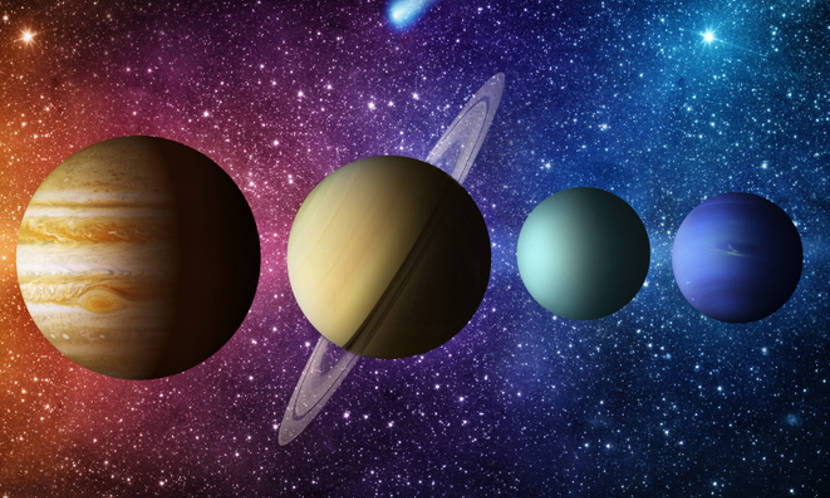
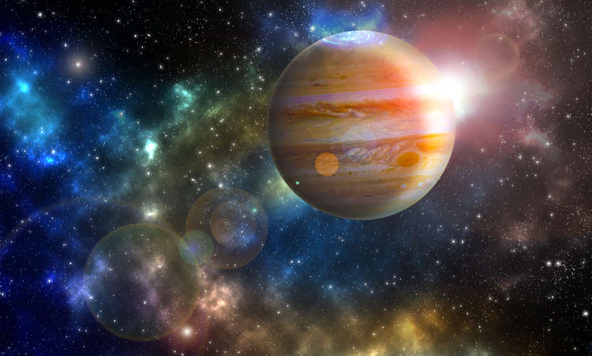
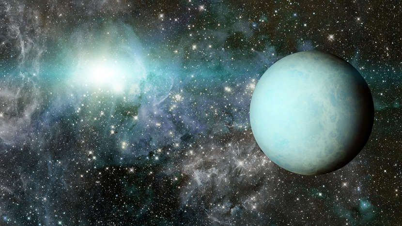
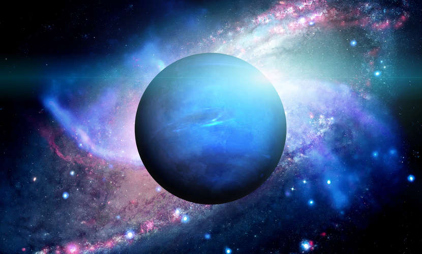

Planetas gasosos, conhecidos também como planetas jovianos ou gigantes, são astros do Sistema Solar , orbitando ao redor do Sol.
A principal característica desses planetas, de forma geral, é a sua composição: são constituídos por gases como
hélio e hidrogênio. Em virtude de sua composição, esses planetas são menos densos que os planetas rochosos.

Os planetas gasosos do Sistema Solar encontram-se mais afastados do Sol e são conhecidos como planetas gigantes.
Origem dos planetas gasosos
Os planetas gasosos formaram-se há aproximadamente 4,6 bilhões de anos. A formação desses planetas está
diretamente ligada à formação do Sistema Solar. Contudo, não há uma teoria completamente aceita a respeito
desse evento astronômico. A teoria mais aceita atualmente é chamada “teoria da nebulosa solar”,
formulada, em 1644, por René Descartes e, posteriormente, reformulada por Pierre-Simon de Laplace, em 1976.
Basicamente essa teoria indica que a formação dos planetas e do Sol ocorreu por meio de uma nebulosa solar
(nuvem interestelar) que entrou em colapso. A gravidade foi a responsável por manter as partículas provenientes
do colapso unidas. O grande núcleo de partículas concentradas deu origem ao Sol, e as demais partículas deram
origem aos planetas. As partículas que se mantiveram mais próximas dessa concentração de matéria possuíam maior
densidade – por isso não se afastaram – e deram origem
aos planetas rochosos. Já as partículas menos densas afastaram-se do Sol, dando origem aos planetas gasosos.
Além das características comuns aos planetas gasosos, como a sua composição e densidade, um núcleo sólido rodeado de gases e diâmetros superiores a
48.000 km, esses planetas apresentam características particulares. Veja!
Júpiter

Júpiter é o maior planeta do Sistema Solar.
Rotação
9 horas e 54 minutos
Revolução (movimento do satélite em torno do planeta)
12 anos
Diâmetro
142.984 km
Temperatura média
-121ºC
Volume
1.394 volumes terrestres
Júpiter é o maior planeta do Sistema Solar, portanto o maior planeta gasoso. Em relação à ordem quanto
ao distanciamento do Sol, Júpiter é o quinto, estando a aproximadamente 778.330.000 km de distância.
Seu volume é 1300 vezes maior que o da Terra, mas sua massa é apenas 318 vezes maior. O planeta possui
um núcleo rochoso, seguido de uma
camada líquida e uma camada gasosa repleta de hidrogênio, hélio, amônia e vestígios de vapor d'água.
A temperatura no planeta pode chegar a -100ºC, e sua atmosfera é bastante turbulenta, fazendo com que ocorra
algo parecido com furacões. Sua superfície apresenta manchas coloridas, que se formam em virtude das
diferenças na composição química e temperatura ao longo da superfície. As manchas mais claras são
conhecidas como zonas, e as manchas mais escuras, como cinturões. Júpiter
é formado por diversos anéis, constituídos por poeira fina de partículas rochosas.
Há no planeta cerca de 63 luas.
Saturno é conhecido por seu sistema de anéis, compostos por gelo. O planeta é o sexto em distanciamento
do Sol, estando a aproximadamente 1.429.400.000 km de distância da estrela. A composição de Saturno é
semelhante à de Júpiter. Além disso,
Saturno é o único planeta do Sistema Solar que possui densidade inferior à da água.
A atmosfera desse planeta é bastante dinâmica, com ventos fortes. A sua coloração característica deve-se
à presença de amônia congelada. A temperatura pode chegar a -140ºC. Com cerca de 60 satélites, o mais
conhecido de Saturno
é chamado de Titã. Esse é o único satélite do Sistema Solar que apresenta atmosfera.

Urano possui cor esverdeada em razão da presença de metano em sua atmosfera.
Rotação
17 horas e 52 minutos
Revolução
84 anos
Diâmetro
51.118 km
Temperatura média
-193ºC
Volume
64 volumes terrestres
Urano é o sétimo planeta em distanciamento do Sol, estando a aproximadamente 2.880.900.000 km de distância.
O planeta foi descoberto em 1789, por William Herschel, astrônomo alemão. Apesar das semelhanças com Júpiter
e Saturno, a composição de Urano difere-se pela presença de outros elementos, como gelo, carbono, silício e oxigênio.
O núcleo do planeta é rochoso e está envolto por uma camada líquida composta por água, metano, gelo e amônia.
A atmosfera de Urano é constituída também por metano, o que lhe confere a cor azulada.
A atmosfera de Urano também se difere da de Júpiter e Saturno, pois é menos dinâmica. Além disso, sua inclinação faz
com que o planeta passe até 42 anos sem iluminação. É formado também por diversos anéis e satélites,
possuindo um total de 27 satélites.
Netuno

Netuno é o último planeta do Sistema Solar e é conhecido pela sua coloração azul.
Rotação
16 horas e 11 minutos
Revolução
164 anos
Diâmetro
49.492 km
Temperatura média
-193ºC
Volume
59 volumes terrestres
Netuno é o último planeta do Sistema Solar, o oitavo em distanciamento do Sol, estando a cerca de 4.504.300.000 km
de distância. O planeta foi descoberto em 1846, por Ler Verrier, matemático e astrônomo francês. Muito parecido com Urano,
Netuno apresenta também uma atmosfera repleta de gases, como o metano, que lhe dá a cor azulada.
Contudo, diferentemente de Urano, a atmosfera de Netuno é bastante agitada, com ventos fortes e furacões.
A temperatura no planeta pode chegar até -218ºC. Além disso, possui um sistema de anéis e 13 satélites. O satélite mais conhecido é chamado de
Tritão e possui uma particularidade: nele há atividades vulcânicas que levam ao seu exterior nitrogênio líquido.